GUI for the Cone Ply Piece Optimization Tool¶
This tool is supposed to support the user by finding the optimal ply piece shape for laminated cones. There are four different tools that can be used:
The Input-Tool
The Cone Geometry-Tool
The Plot Ply Piece-Tool
The Evaluation-Tool
When the program is started, the Input-Tool shows up. All other Tools are accessible through the Menu Bar Item ‘Tools’.
Installation Requirements¶
To use this tool one needs Python 2.x, numpy and matplotlib, like for the Abaqus-plugin. Additionally, PyQt4 (https://wiki.python.org/moin/PyQt4) is needed.
Input Tool¶
The Input-Tool is also the Main Window of this program. The user can use the other tools by following the program or by clicking the different items in the menu ‘Tools’.

Figure 1: Input GUI¶
In Figure 1 is the Input-Tool shown. In the menu bar are two different items visible. In the ‘File’-Menu one can save or load a specific study or close the whole program. Inside the ‘Tools’-Menu are three different items which lead to the other three tools.
The ‘Set Cone Geometry’-Button opens the Cone Geometry-GUI, which will be explained later.
One can edit five different parameters for one study: Maximum width, starting Position, Fiber Angle, Width Variation and the basic ply shape. For each parameter one has to define the lower and the upper limits and the step size. On the right side of the GUI is a drawing which explains three of the four numerical parameters. For further explanation is the effect of the parameters in the following chapter shown.
Effect of the different parameters on the shape of the ply piece¶
There are five different parameters used in this program to modify the shape of the ply piece. The basic ply shape parameter changes the general rules which are applied by constructing the ply piece. In Figure 2 is the influence of the parameters shown. The blue lines are the edges of the unwounded cone. The red and grey polygons are the ply pieces and the orange area is the so called effective area. Inside this area the fiber angle deviation is smaller than 2°. The larger the area, the better.
Shape A is a trapezoidal shape and has by definition none overlapping areas. Only the sides perpendicular to the original line are parallel to each other. Shape B is also a trapezoidal shape (called ‘Trapez2’) and allows single overlapping of two ply pieces on the free cone area. The last basic shape is rectangular. The opposite sides are parallel to each other. In Figure 2 are the different basic shapes exemplarily shown.

Figure 2: Examples of different basic shapes¶
The maximum width parameter determines the largest width of the ply piece. For the rectangular shape is the width constant and for the trapezoidal shapes can this width be found at the lower end of the cone. In Figure 3 are three different examples for the maximum width shown.

Figure 3: Example of the maximum width¶
The starting position defines at which s-coordinate the nominal fiber angle starts. The smaller the value is, the nearer starts the part at the cone vertex. In Figure 4 are two different examples shown.

Figure 4: Examples of the starting position¶
The fiber angle is measured between the s-coordinate and the straight lines of the ply piece. In this example the fiber angle lies between the lower edge of the unwounded cone area and the upper and longer edge of the ply piece. In Figure 5 are examples of different fiber angle shown.

Figure 5: Examples of different fiber angles¶
The width variation is a different parameter. When a ply piece is constructed, the program uses a ‘basic line’ which starts at with the fiber angle . The ending edge of the ply piece is always perpendicular to the basic line. The width variation defines the position of the vertices of the ply piece polygon on the ending edge relative to the basic line.
For a value of the basic line is also the upper edge of the ply
piece polygon, see Figure 6 (a). When is  the basic line is the
axis symmetry for the upper and lower ply piece edges (Figure 6 (b)).
The upper limit of is
the basic line is the
axis symmetry for the upper and lower ply piece edges (Figure 6 (b)).
The upper limit of is  and then the basic line is also the lower
edge of the ply piece (Figure 6 (c)).
and then the basic line is also the lower
edge of the ply piece (Figure 6 (c)).
This parameter is important for fiber angles smaller than 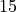.
For larger angles the optimum is always 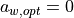. For  the
optimum value is 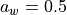. This variable can only be used for the Shapes A
and C.
the
optimum value is 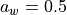. This variable can only be used for the Shapes A
and C.

Figure 6: Examples of different width variations¶
Using the Input-Tool¶
The controls in the Input-Tool are used to define the limits and step sizes of the parametric study.
In the first column one can choose if one of the parameters shall be fixed. In this case only the minimum Value is considered. This reduces the processing time and makes the evaluation easier.
The next three columns are the minimum, maximum and step size value for each parameter. If an entry is invalid (Min > Max) a Message Box adverts the mistake.
It is possible to save the parameters to a file and load it to the GUI later. When loaded the values in the editable lines are changed.
It is not possible to compare the results of different basic shapes in this tool. For this it is recommended to export the result data to Excel.
Geometry Tool¶
This tool changes the geometry of the studied cone. This tool can be entered by clicking the ‘Set Cone Geometry’-Button or the ‘Cone Geometry Tool’- Item in the Menu ‘Tools’ in the menu bar.
When started, the window in Figure 7 will be opened. On the left side are four
changeable lines and some further information about the cone geometry. It is
possible to change the the half-cone angle and the dimensions of the cone. The
parts between 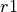 and 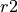 and between 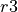 and 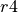 are auxiliary
parts used for cutting and molding the edges of the cone. Between and
(each with height  ) is the so called free cone area.
) is the so called free cone area.
The algorithm of the ply piece design will try to cover the whole cone, but the investigation and evaluation of the fiber angle deviation will be only applied to the free cone.
On the right side of the window is a dynamic drawing, which will change with the entered values. There is also the definition of the coordinate system.

Figure 7: Cone Geometry Tool¶
New cone designs can be saved to a file and in a later session recovered. The save and load functions can be found in the File-Menu. The cone geometry set in this window will be used for all tools of this program.
Evaluation Tool¶
The evaluation tool is used to draw graphics and export the results of a parameter study to an Excel or csv-file. The tool will be opened after the parametric study is finished or by clicking its Item in the Input-Tool Menu ‘Tools’. In Figure 8 is the Window of the evaluation tool shown.
The items for loading, saving and exporting can be found in the Menu ‘File’. The loading application is used when the tool is opened directly from the Input-Tool window. Only files created by the save-function can be loaded into the program and not the export files.
To draw a graphic one has to choose which results should be shown. It is possible to show all evaluation parameters in one drawing. In the next step one has to decide if the drawing should be a 2D or 3D Graphic. In a 2D-Graphic is for every design parameter an own drawing made. At each Step are the highest value and the value of the other parameters for this point shown. In a 3D-Graphic are also the best results for the two design parameters chosen as axes shown. This drawing can be turned to get the best view of the drawing and is useful to get an overview of the results. In Figure 9 and Figure 10 are examples for the 2D and the 3D-Result drawing shown.
It is possible that the export function fails if there are too many results. In this case one can simply save the results and afterwards import the file as a csv-file to Excel.

Figure 8: Evaluation Tool¶

Figure 9: 2D-Result Drawing¶

Figure 10: 3D-Results Drawing¶
Evaluation Parameters¶
There are five different parameters used to evaluate the different shapes of the ply pieces:
The degree of coverage 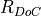 is the ratio of the area of a ply piece on the free cone area 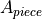 times the number of pieces per ply 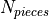 and the free cone area 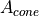:
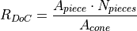
The optimal value is  . The value can be higher due to overlapping ply
pieces.
. The value can be higher due to overlapping ply
pieces.

Figure 11: Definition of the effective area¶
The effective area of a ply piece is the area in which the fibers have a fiber deviation smaller than 2°. This area is used twice in evaluation parameters: For the ratio of a single ply piece 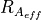 and for the ratio for the whole cone 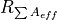, called the ratio of total effective area.
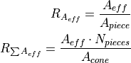
In the drawings of the ‘Plot Ply Piece’-Tool is the effective area drawn as
orange polygons. The optimum value is also , but is achievable only for
very small fiber angles.
When trapezoidal shapes are used, not all fibers starting at the bottom reach the upper edge of the cone. The ratio of continuous fibers estimates the amount of continuous fibers. Therefore are two lengths 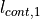 and 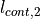 are defined and their ratio calculated:

Figure 12: Ratio of continuous fibers¶
For the rectangular shape this values should be always .
The ratio of total effectiveness combines all ratios of the single ply pieces:
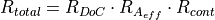
This ratio can be thought of the amount of free cone area covered with fibers
with a fiber deviation smaller than 2° and continuous from top to
bottom. The optimum is .
Plot Ply Piece - Tool¶
This tool is useful to show the shape of a specific ply piece with specific design parameters. In is the Tool window shown. If the ‘Plot with/without explanations’-box is set, the drawing contains further information about the input parameters.

Figure 13: Plot Ply Piece Tool¶
By clicking the ‘Plot Ply Pieces’-Button two new windows are opened, see Figure 14. In the left side of the window is a table with the input parameters, the lengths of each side, the evaluation parameters and further information like the local fiber angles at the vertices of the free cone edges and the ply piece.
On the right side are the ply pieces shown as grey and red polygons. The effective area of each ply piece are drawn as orange polygons. The blue lines are the outer edges of the cone geometry. The green radial lines are the lines of the conical coordinate s. The radial angle difference between the lines is in the conical coordinate system.
The image of the ply piece can be saved by clicking the save item in the menu bar.

Figure 14: Example of ply piece plot¶
Python Programming¶
This chapter gives a short introduction to the python files used in this program and the basic ideas behind the programming.
Data Handling¶
To handle the design and cone geometry parameters a python class called
‘DataHandle’ and the ‘ResultHandle’ for the results of the study. Both can be
fined in GUIHandle.py.
GUI Programming¶
The tools are all programmed with PyQt4. The following list connects the python files and the GUI-Tools:
Input-Tool:
GUIInput.pyCone Geometry Tool:
GUIConeGeo.pyEvaluation Tool:
GUIEval.pyPlot Ply Piece Tool:
GUIPlot.py
Backbone Programming¶
In the following list are the Python files used to calculate the shapes and draw the graphs:
GUICalc.pyContains the class used to make all variations of the study. Is called by Input-Tool, calls afterwards the evaluation tool and shows a progress bar.GUIPrint.pyContains the functions and classes used to draw the evaluation graphs. Uses matplotlib.